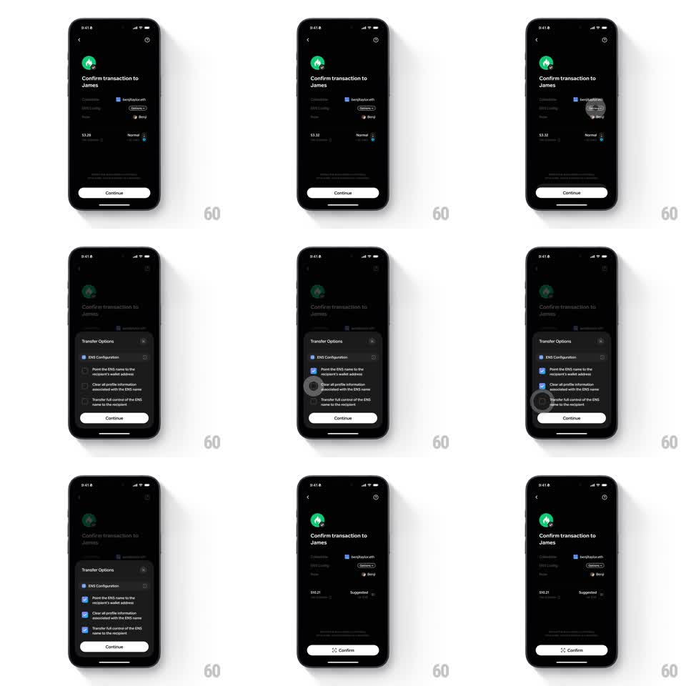

Media
Frame-by-frame

Rebuild this interaction 1:1: Family's ENS transfer options - on the dark "Confirm transaction to James" screen for the benjitaylor.eth collectible, the "Transfer Options" sheet offers three springy checkboxes (point ENS to recipient, clear profile info, transfer full control), and confirming returns to the screen with the fee updated and Confirm enabled.

Rebuild this interaction 1:1: Family's ENS transfer options - on the dark "Confirm transaction to James" screen for the benjitaylor.eth collectible, the "Transfer Options" sheet offers three springy checkboxes (point ENS to recipient, clear profile info, transfer full control), and confirming returns to the screen with the fee updated and Confirm enabled.
## Integration
Integration: stack-agnostic spec - springs given as stiffness/damping, timed motions as duration + curve; map every value to your framework and animation library of choice.
## Scene
Dark confirm screen: green James avatar, "Confirm transaction to James", Collectible row ("benjitaylor.eth" ENS card), "Options" pill, fee "$3.29 Normal", white Continue. Sheet: "Transfer Options" - "ENS Configuration" section with three checkbox rows: "Point the ENS name to the recipient's wallet address", "Clear all profile information associated with the ENS name", "Transfer full control of the ENS name to the recipient" - plus Continue. Final screen state: fee "$10.21 Suggested", white Confirm pill.
## Motion spec
Pattern: springy checkbox sheet with dynamic button state.
- Tap Options: the sheet slides up (spring ~300/20) over the dimmed confirm screen (scrim 45%).
- Tap a checkbox: the box draws its check (stroke trim 150ms) with a spring pop (scale 1 -> 1.15 -> 1, spring ~340/14) and fills blue; unchecking reverses (check trims out, 150ms).
- Continue tracks validity: light/white at rest, its label and state crossfade (200ms) as selections change.
- Tap Continue: the sheet slides down (250ms), the confirm screen's fee row rolls to the new value ("$3.29 Normal" -> "$10.21 Suggested", digit roll 250ms), and Continue morphs into Confirm (label crossfade, arrow glyph drawing in, 200ms).
## Calibration
- Each checkbox animates independently - rapid taps chain without canceling earlier springs.
- The ENS card keeps its art visible behind the scrim.
## Reduced motion
Checks fade in (150ms); no pops.
## Don't miss
- The fee rises when options are selected - the sheet's choices visibly cost more gas.
- The three options are cumulative checkboxes, not a radio group.